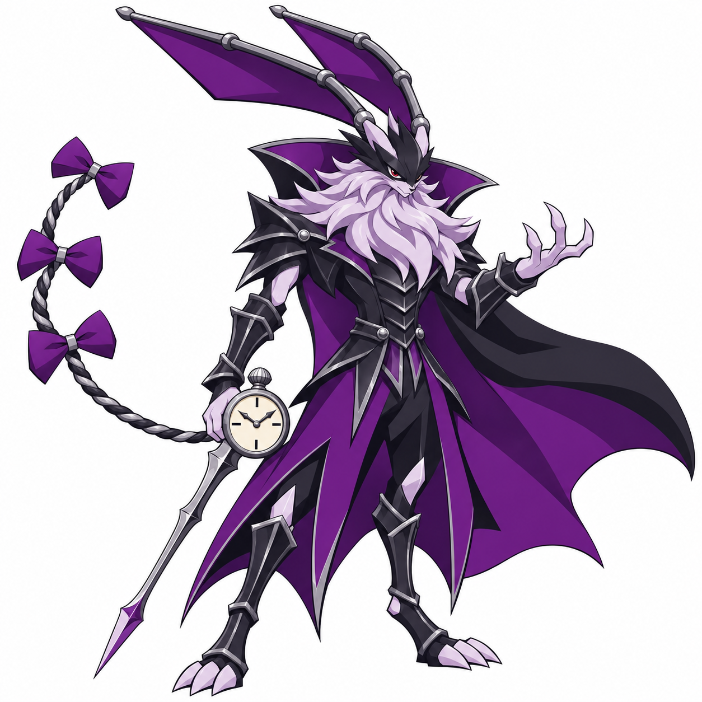

Conde da Última Hora
Nome provisório para uma evolução adulta das sombras do Rabbito: juba robusta no queixo e peitoral, postura de comando, armadura formal vampiresca e relógio-espada.

Brief · Conferência
Posição na linha e nome propostos. Sem vínculo automático com possessão ou Carretel Negro.